EyeBus App/ 視障者公車預約 App
Research,Design & Test
Eyebus acts as a personal assistant allowing the visually impaired bus passenger to book his/her bus ride through a mobile app. Once the booking is completed relevant ,bus driver will get notified with relevant information for a smooth and hassle-free pick up of the visually impaired passenger.
Eyebus App 是一款個人助理 App，輔助視障乘客預訂公車行程。完成相關預訂後，公車司機將收到相關信息通知，以便視障乘客順利、無憂地到達目的地。
Role
App Designer
Collaborators
DITL Lab
Duration
2021
Link
Official website >
EyeBus Service
The visually impaired arrives at the “priority boarding area” and send a booking notice with “EyeBus App” to the “bus telecom system”. The “bus telecom system” will later remind the driver to stop at the “priority boarding area”. The “EyeBus App” will notify the visually impaired as the bus approaches the station. Upon boarding the bus, Eyebus will prompt the visually impaired passenger with the option to notify them when they are reaching their destination.
視障人士到達 “優先上車區”，通過 “EyeBus App” 向“公車車機”發送預約通知。 “公 ”稍後會提醒司機在“ 優先上車區”停車。當巴士接近車站時，“EyeBus App” 會通知視障人士。上車後，”Eyebus App“ 會提示視障乘客，並允許他們選擇到達的目的地，進行抵達提示。
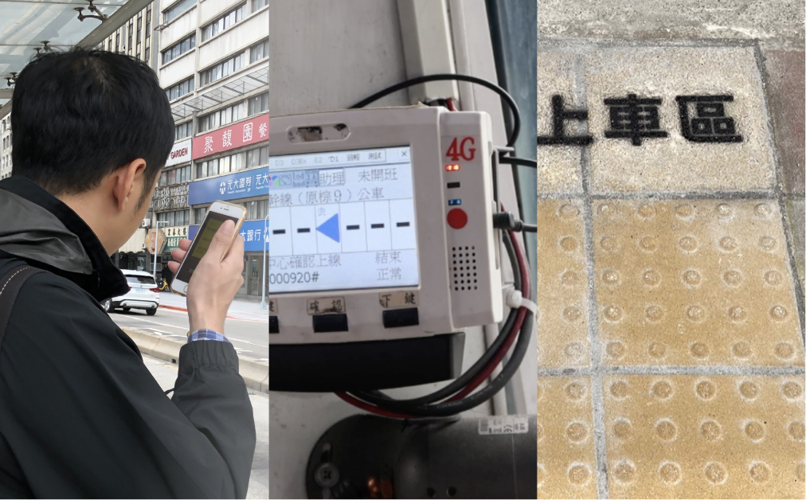
☝🏻 Schematic diagram of the core servic
☝🏻 Booking process
☝🏻 EyeBus POC video
How do visually impaired people use App?
Accessibility aims to reduce the burden of operation and uphold the spirit of equality of human rights. Several accessibility auxiliary functions are widely used in the built-in operating systems of mobile phones, such as VoiceOver for iOS and TalkBack for Android OS, the operation mode of which is shown in Figure below.
無障礙旨在減輕運營負擔，維護人權平等精神。一些無障礙輔助功能在手機內置操作系統中被廣泛使用，例如 iOS 的 VoiceOver 和 Android OS 的 TalkBack，其操作模式如下圖所示。
無障礙旨在減輕運營負擔，維護人權平等精神。一些無障礙輔助功能在手機內置操作系統中被廣泛使用，例如 iOS 的 VoiceOver 和 Android OS 的 TalkBack，其操作模式如下圖所示。
Functions
The EyeBus App offers five ways to query buses to meet the different needs of the visually impaired, namely “plan route”, “search”, “Favourite: Bus”, “Nearby bus stop”, and “Favourite: Bus stop”
EyeBus App提供五種公交查詢方式，滿足視障人士的不同需求，分別為“規劃路線”、“搜索”、“收藏：公交”、“附近公交站”、“收藏：公交站”
☝🏻 functions of EyeBus App
Visual UI
👉🏻 Designers designed interfaces that can be used in any situation, such as a homepage that can be operated with one hand, and stop button that prevents accidental tapping.
👉🏻 Some visually impaired people recognize the interface through both sight and hearing. After actual testing, it is found that the vertical information flow is the most suitable for users in this situation.
👉🏻 Use colour-blind friendly colors and increase contrast
👉🏻 Some visually impaired people recognize the interface through both sight and hearing. After actual testing, it is found that the vertical information flow is the most suitable for users in this situation.
👉🏻 Use colour-blind friendly colors and increase contrast
👉🏻 設計師設計了可以在任何情況下使用的界面，例如可以單手操作的主頁，以及防止意外點擊的停止按鈕。
👉🏻 一些視障人士通過視覺和聽覺來識別界面.經過實際測試，發現垂直信息流最適合這種情況下的用戶。
👉🏻 使用色盲友好的顏色，增加對比度。
👉🏻 一些視障人士通過視覺和聽覺來識別界面.經過實際測試，發現垂直信息流最適合這種情況下的用戶。
👉🏻 使用色盲友好的顏色，增加對比度。
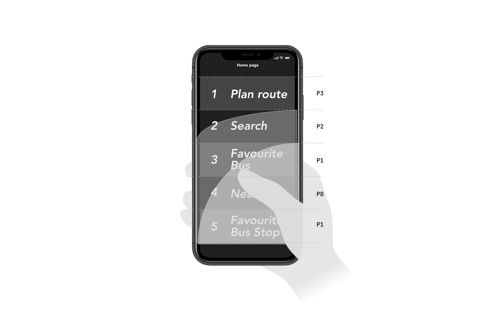
☝🏻 the thumb zone
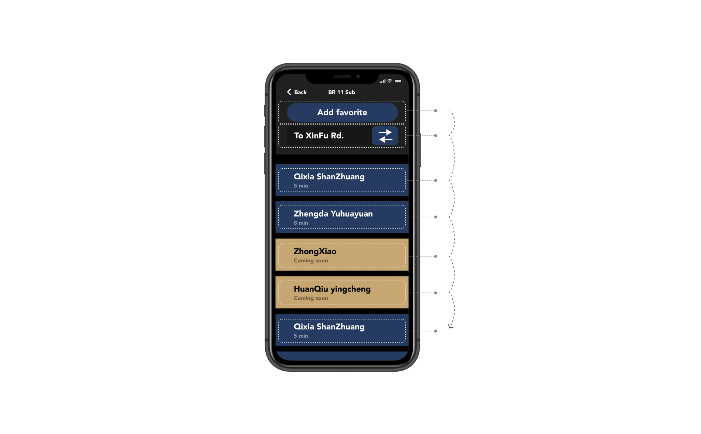
☝🏻 Vertical data flow
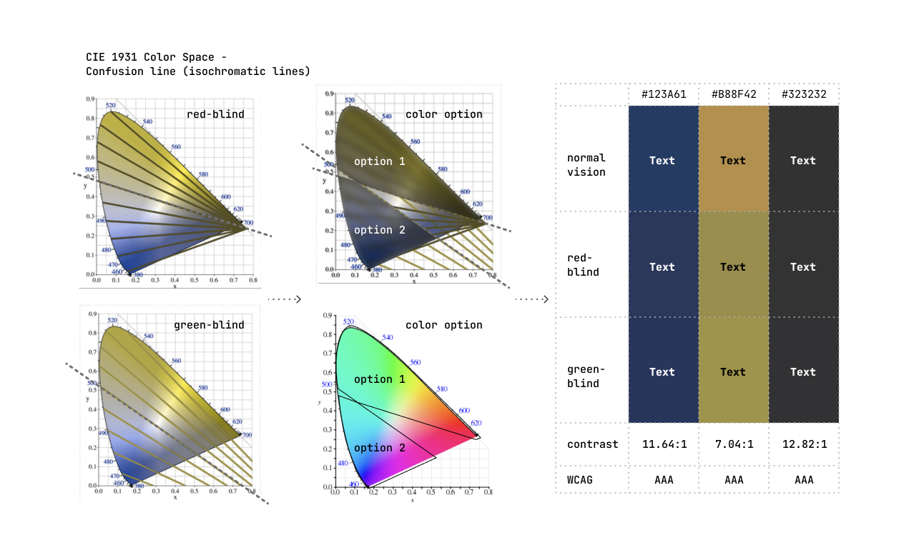
☝🏻 Contrast detection: Meet WCAG2.1 AAA standard
Voice UI
👉🏻 Define alt text for all interface components, and add connective words to strengthen the relationship between the context and the context of the information
👉🏻 Proactively notify the user when new information is updated to the screen
👉🏻 Improve traditional operations that are difficult to describe
👉🏻 為所有界面組件定義替代文字，並添加連接詞以加強上下文與信息的上下文之間的關係
👉🏻 當新信息更新到屏幕時主動通知用戶
👉🏻 改進難以描述的傳統操作
👉🏻 Proactively notify the user when new information is updated to the screen
👉🏻 Improve traditional operations that are difficult to describe
👉🏻 為所有界面組件定義替代文字，並添加連接詞以加強上下文與信息的上下文之間的關係
👉🏻 當新信息更新到屏幕時主動通知用戶
👉🏻 改進難以描述的傳統操作
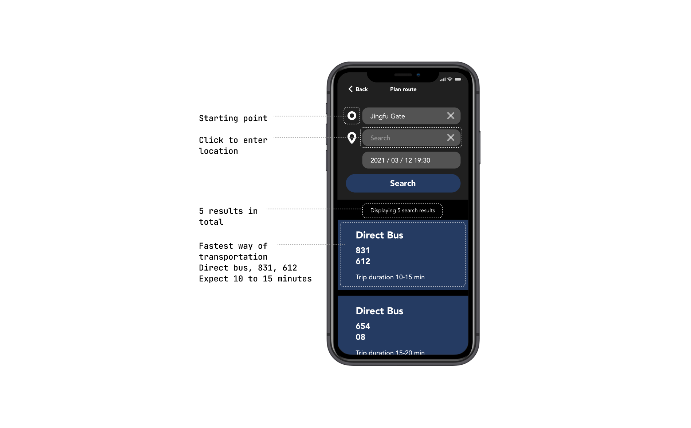
☝🏻 Alt-text example
Does the service really work?
Traditional App design focuses on the interface's ease of use and usability and it provides designers with a clear direction for rectifying interface components. However, other factors that need be considered when launching the product are ignored, which increases the possibility of failure.
Thus, when the executive team performs field tests, both the SUS ease of use score and the App's effectiveness from the front-end and back-end standpoint are tested. Finally, with qualitative Feedback, designers can intuitively and comprehensively grasp the App's benefits.
Thus, when the executive team performs field tests, both the SUS ease of use score and the App's effectiveness from the front-end and back-end standpoint are tested. Finally, with qualitative Feedback, designers can intuitively and comprehensively grasp the App's benefits.
傳統的 App 設計注重界面的易用性和易用性，為設計人員整頓界面組件提供了明確的方向。但是，在推出產品時忽略了其他需要考慮的因素，這增加了失敗的可能性。
因此，在執行團隊進行現場測試時，SUS易用性得分和應用程序的有效性都從前端和後端的立場進行了測試。最後，通過定性的 Feedback，設計師可以直觀、全面地掌握App的優勢。
因此，在執行團隊進行現場測試時，SUS易用性得分和應用程序的有效性都從前端和後端的立場進行了測試。最後，通過定性的 Feedback，設計師可以直觀、全面地掌握App的優勢。
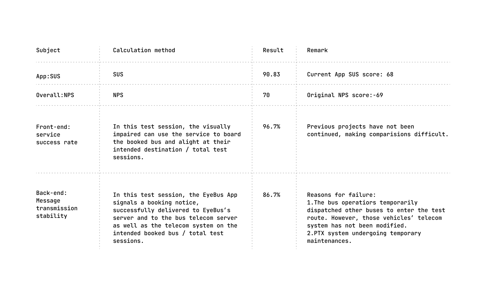
☝🏻 Test results obtained through 30 tests
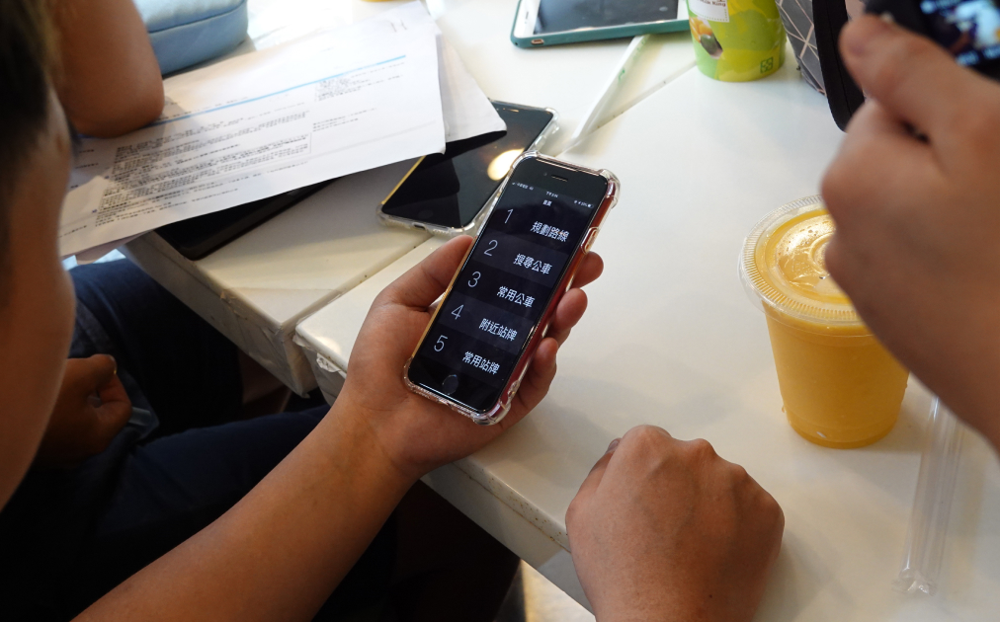
☝🏻 Testing process
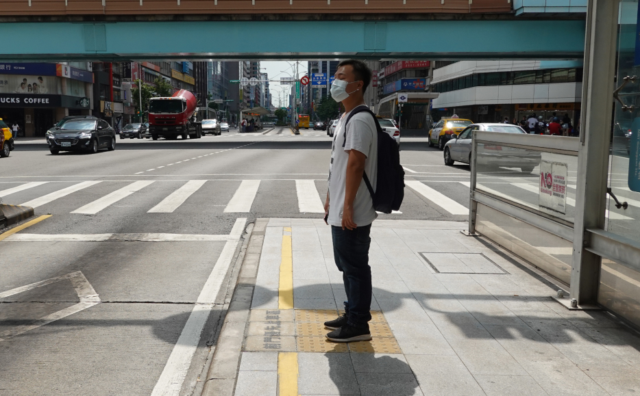
☝🏻 Testing process
Insight
Difficulties for the visually impaired to take the bus
Transportation by bus is by far the most popular and common method for visually impaired adults to commute. It has numerous advantages, including a smaller financial burden, high-density routes, and it covers areas not accessible by the MRT.
For this purpose, the Taiwan government has set up various auxiliary equipment, hardware, and software. However, many visually impaired individuals wrote to the media about their negative experiences and extremely low operational efficiency. Possible reasons could be difficulties in coordination with bus drivers, the location of the bus stops is unclear . Lastly, government policies have been in place for many years, but they can still not solve the problem, which requires new innovative methods.
迄今為止，乘坐公共汽車是視障成年人最流行和最常見的通勤方式。它有許多優勢，包括更小的財務負擔、高密度的路線，以及覆蓋捷運無法到達的區域。為此，台灣政府設置了各種輔助設備、硬件和軟件。然而，許多視障人士寫信向媒體表示他們的負面經歷和極低的運營效率。可能的原因可能是與公交車司機協調困難，公交車站的位置不明確。最後，政府政策已經出台多年，但仍不能解決問題，需要新的創新方法。
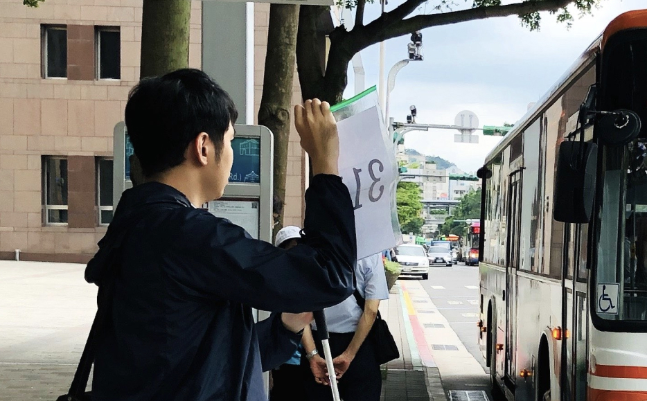
☝🏻 The visually impaired will wait for the bus with a handwritten card
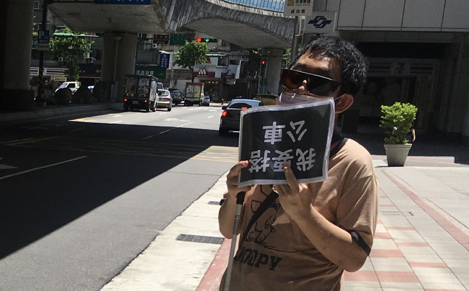
☝🏻 Some visually impaired people don't even know if the card they are holding is correct
App development process
Service design emphasizes the relationship between the designer and the service subject, and this is achieved through a flexible development process with the goal of maintaining contact with the service subject at every stage to avoid creating designs that do not meet the requirements. EyeBus uses the three-diamond service design model to allocate time between three phases, research, design, and field testing, to maximize feedback conversion and avoid overlapping objectives. Furthermore, the executive team uses agile iterative methods to speed up the design process.
服務設計強調設計者與服務主體之間的關係，這是通過靈活的開發流程實現的，目標是在每個階段都與服務主體保持聯繫，避免產生不符合要求的設計。 EyeBus 採用三鑽服務設計模型，在研究、設計和現場測試三個階段分配時間，最大限度地提高反饋轉化率，避免目標重疊。此外，執行團隊使用敏捷迭代方法來加快設計過程。
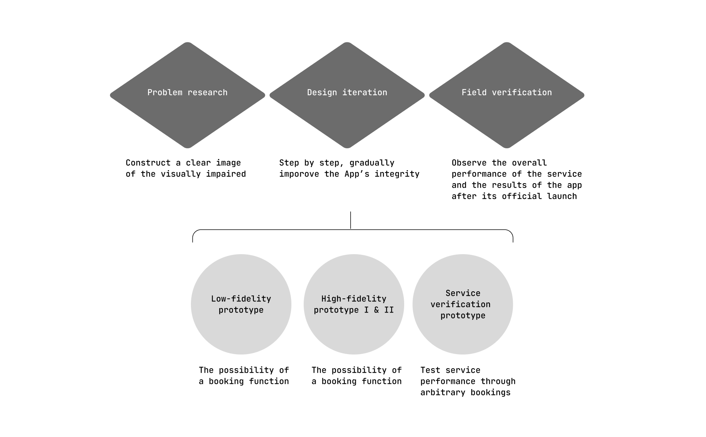
☝🏻 three-diamond service design model & agile iterative methods
Design Tools
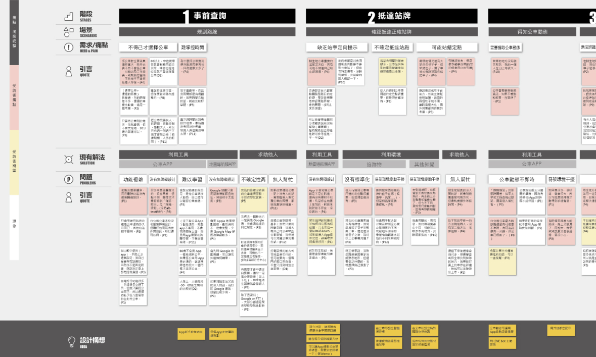
☝🏻 User flow & pain point
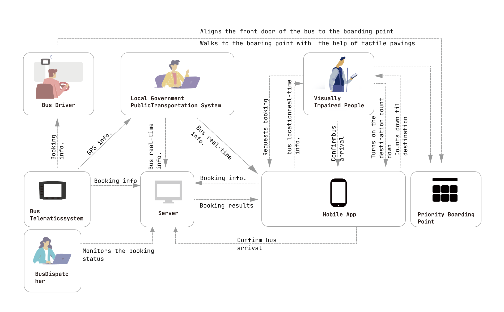
☝🏻 use case diagram
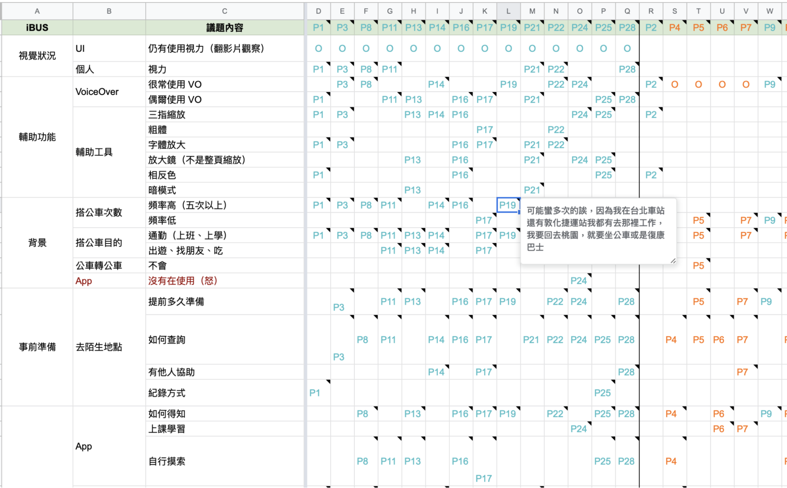
☝🏻 Qualitative research for agile iterations
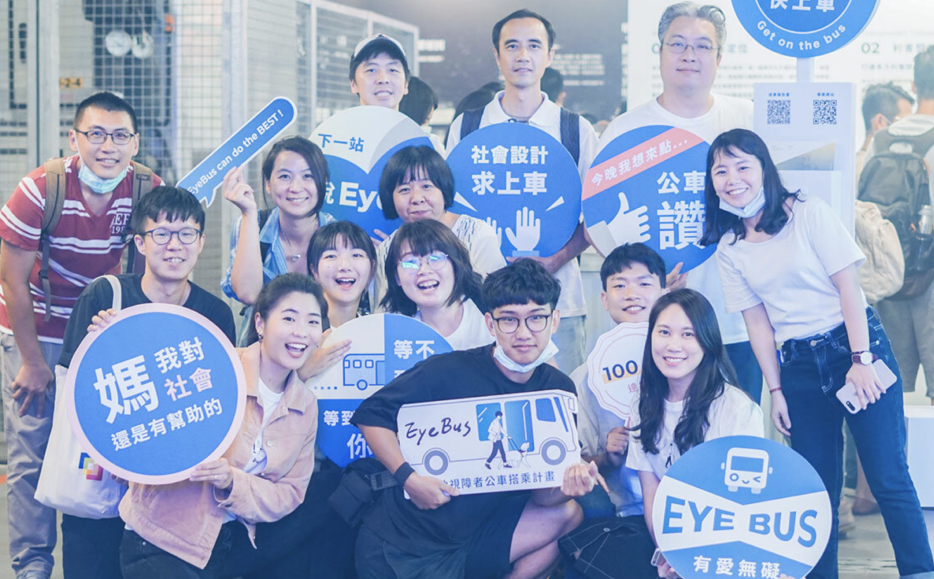
☝🏻 Yee! EyeBus Team